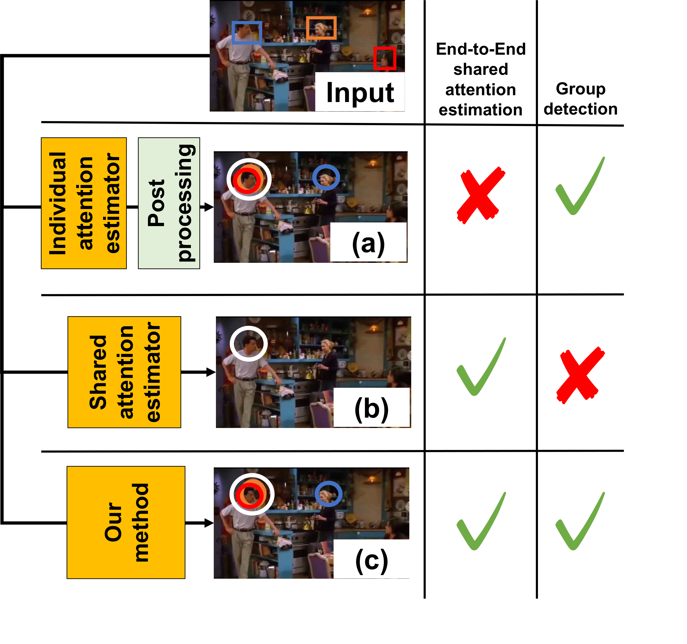
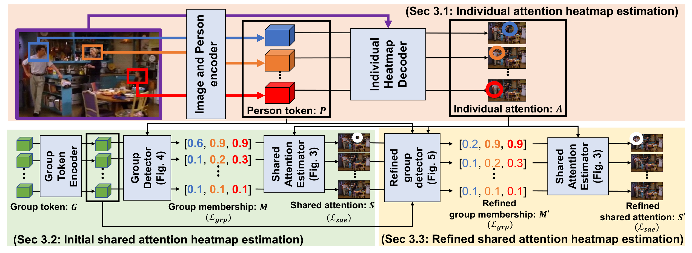
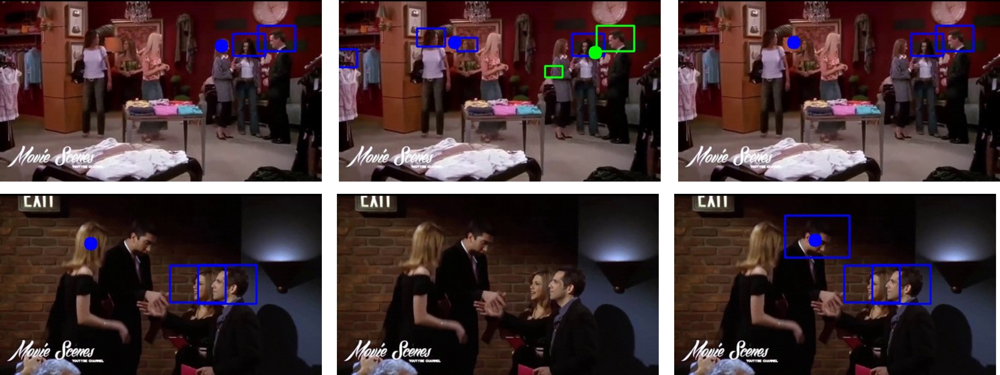

TL;DR

Figure 1. Difference between previous and our shared attention estimation methods. (a) Shared attention estimation using simple post-processing over individual attention maps. (b) Direct shared attention estimation without group detection. (c) Our method: end-to-end shared attention estimation via group detection, where shared attention is estimated by integrating individual attention based on detected groups.
This paper proposes an end-to-end shared attention estimation method via group detection. Most previous methods estimate shared attention (SA) without detecting the actual group of people focusing on it, or assume that there is a single SA point in a given image. These issues limit the applicability of SA detection in practice and impact performance. To address them, we propose to simultaneously achieve group detection and shared attention estimation using a two-step process: (i) the generation of SA heatmaps relying on individual gaze attention heatmaps and group membership scalars estimated in a group inference; (ii) a refinement of the initial group memberships allowing to account for the initial SA heatmaps, and the final prediction of the SA heatmap. Experiments demonstrate that our method outperforms other methods in group detection and shared attention estimation. Additional analyses validate the effectiveness of the proposed components.

Figure 2. Overview of our network. Individual attention heatmaps A are first estimated for each person. They are exploited to derive group memberships per group token M and integrated to infer the shared attention heatmap S. Both group memberships and shared attention heatmaps are further refined in a second step.
For each person, head bounding box coordinates and the cropped head image are encoded as person gaze tokens, processed by transformers along with image tokens to produce per-person tokens P. These are decoded into individual attention heatmaps An.
Learnable group tokens G interact with person tokens through cross-attention to infer group membership coefficients Me,n. The shared attention heatmap for each group is computed as a membership-weighted sum of individual attention heatmaps.
Spatial argmax of the initial SA heatmaps provides peak coordinates that are fed back to refine group memberships M′, enabling the final shared attention heatmap S′ to benefit from both group context and initial SA estimates.

Figure 3. Visual comparison on the VideoCoAtt dataset. People joining the same group are enclosed within a rectangle of the same color. The estimated shared attention point for each group is visualized as a colored dot. Our method correctly detects groups and localizes shared attention targets where competing methods fail.
| Method | θIoU = 0.5 | θIoU = 1.0 | ||||
|---|---|---|---|---|---|---|
| θDist=0.05 | θDist=0.1 | θDist=∞ | θDist=0.05 | θDist=0.1 | θDist=∞ | |
| MTGS-PP [NeurIPS 2024] | 16.4 | 20.7 | 37.5 | 7.1 | 8.6 | 11.3 |
| MTGS-Soc. [NeurIPS 2024] | 5.7 | 7.8 | 28.6 | 2.9 | 3.6 | 9.8 |
| Gaze-LLE-PP [CVPR 2025] | 15.6 | 19.5 | 26.3 | 5.7 | 6.9 | 8.2 |
| ★ Ours | 32.4 | 41.0 | 61.7 | 12.5 | 15.9 | 17.7 |
Table 1. GroupAP (%) comparison on the VideoCoAtt dataset. Our method outperforms all baselines across every setting. Results in red indicate the best score per column.
| Method | θIoU = 0.5 | θIoU = 1.0 | ||||
|---|---|---|---|---|---|---|
| θDist=0.05 | θDist=0.1 | θDist=∞ | θDist=0.05 | θDist=0.1 | θDist=∞ | |
| MTGS-PP | 30.3 | 35.6 | 66.0 | 5.1 | 6.3 | 9.0 |
| MTGS-Soc. | 7.6 | 9.9 | 37.2 | 1.5 | 1.9 | 4.7 |
| Gaze-LLE-PP | 7.5 | 8.5 | 12.4 | 2.9 | 3.0 | 3.3 |
| ★ Ours | 27.2 | 33.5 | 52.0 | 7.5 | 10.1 | 12.0 |
Table 2. GroupAP (%) on the VideoAttentionTarget dataset. Our method achieves the best performance under strict group detection criteria (θIoU = 1.0).
| Method | θIoU = 0.5 | θIoU = 1.0 | ||||
|---|---|---|---|---|---|---|
| θDist=0.05 | θDist=0.1 | θDist=∞ | θDist=0.05 | θDist=0.1 | θDist=∞ | |
| MTGS-PP | 7.8 | 13.9 | 25.4 | 4.6 | 5.2 | 5.6 |
| MTGS-Soc. | 0.8 | 1.8 | 9.1 | 0.7 | 0.7 | 1.3 |
| Gaze-LLE-PP | 5.8 | 8.1 | 14.1 | 2.4 | 2.8 | 4.4 |
| ★ Ours | 9.0 | 15.6 | 36.3 | 2.1 | 2.1 | 2.4 |
Table 3. GroupAP (%) on the ChildPlay dataset. Our method achieves best performance under lenient criteria (θIoU = 0.5), especially at θDist = ∞ (36.3% vs. 25.4% for the best baseline).
@inproceedings{nakatani2026sagd,
title = {End-to-End Shared Attention Estimation via Group Detection
with Feedback Refinement},
author = {Nakatani, Chihiro and Ukita, Norimichi and Odobez, Jean-Marc},
booktitle = {Proceedings of the IEEE/CVF Conference on Computer Vision
and Pattern Recognition Workshops (CVPRW)},
year = {2026},
}
This work was conducted in collaboration with Prof. Jean-Marc Odobez at the Idiap Research Institute and École polytechnique fédérale de Lausanne (EPFL), Switzerland.